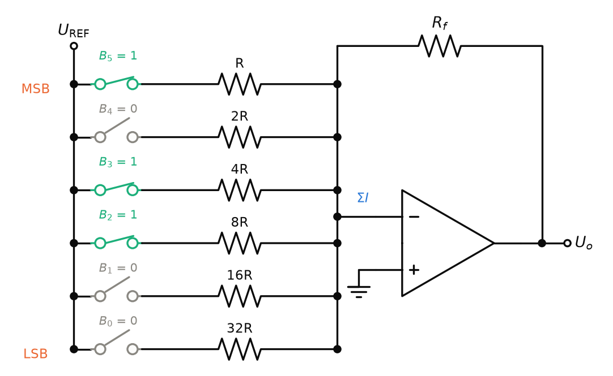
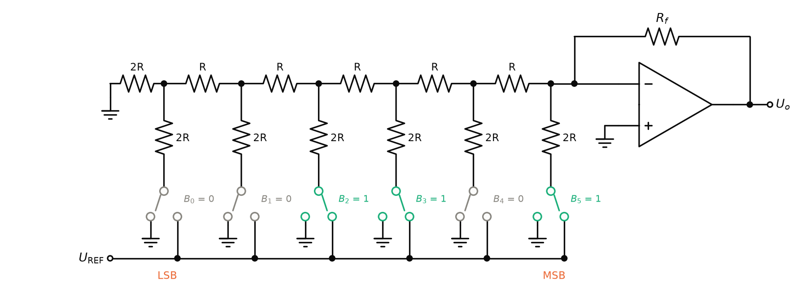
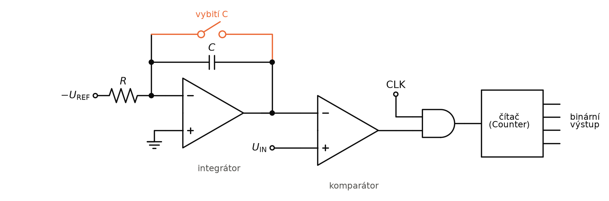
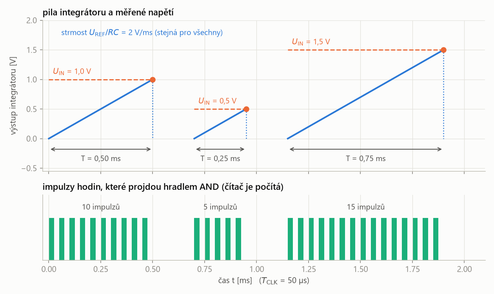
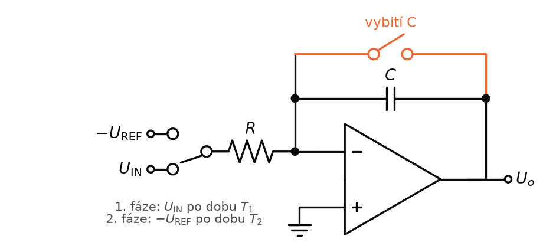
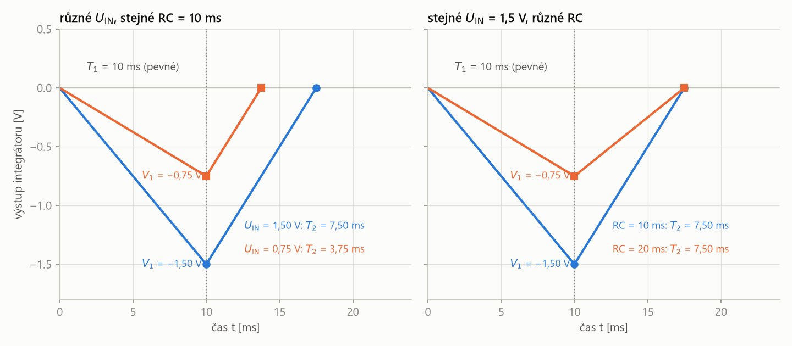
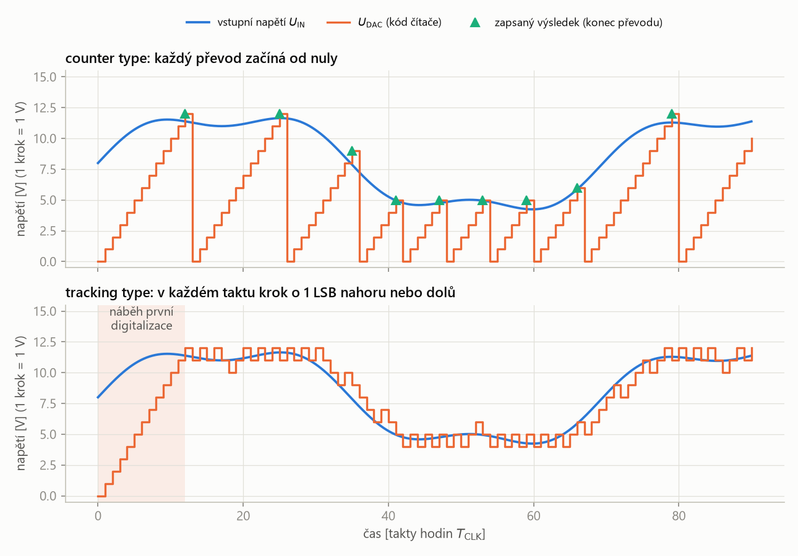
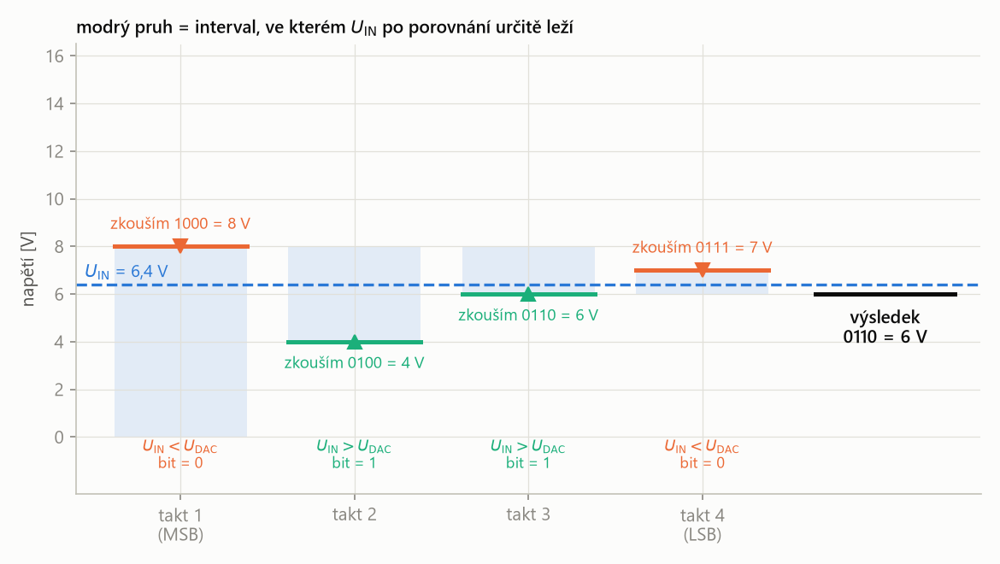
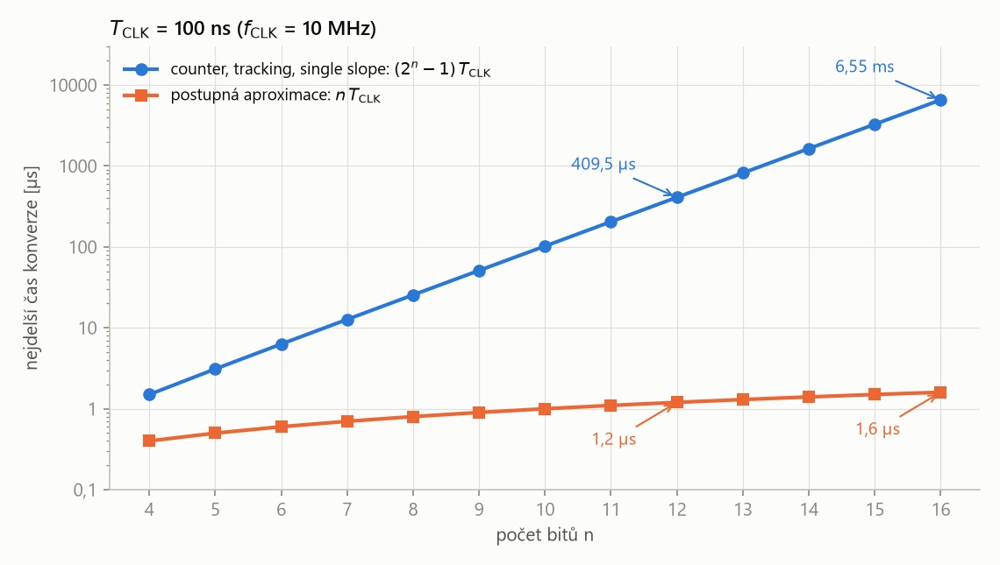

SAD – závěrečná zkouška · A/D a D/A převodníky – SAD · https://balnerm.github.io/pripravy/sad/zkouska/17_prevodniky.html
Přednáška 7
A/D a D/A převodníky
Převodník je místo, kde se z napětí stane číslo (A/D), nebo z čísla napětí (D/A). Všechny převodníky v této kapitole jsou poskládané z prvků, které už známe: rezistorová síť, komparátor, integrátor a čítač. Liší se tím, jak hledají číslo odpovídající vstupu – a z toho plyne, jak jsou rychlé, přesné a složité. U každého řešení je proto nejdůležitější pochopit jeho princip.
Navazuje se na úvod do A/D převodu v P6: tam jsou definice A/D a D/A převodníku, kvantizačního kroku a nejrychlejšího paralelního (flash) ADC. Slide „AD převodník“ dělí látku na čtyři části: DAC, komparační převodník (half-flash), integrační převodníky a kompenzační převodníky.
MSB (most significant bit) je nejvýznamnější bit binárního čísla, tedy bit s největší váhou \(2^{n-1}\). LSB (least significant bit) je nejméně významný bit s váhou \(2^0 = 1\); jako napětí odpovídá LSB jednomu kvantizačnímu kroku.
v čísle 1100 je MSB první jednička zleva (váha 8), LSB poslední nula vpravo (váha 1). Změna MSB posune napětí o půlku rozsahu, změna LSB jen o jeden nejmenší krok.
| skupina (slide) | převodníky | společný princip |
|---|---|---|
| D/A převodník | váhový R–2R–4R …, příčkový R–2R | rezistorová síť + OZ sečte proudy bitů |
| komparační | flash (P6), half-flash | vstup se porovná s mnoha prahy najednou |
| integrační | single slope, dual slope | napětí se převede na čas, čas se změří čítáním hodin |
| kompenzační | counter type, tracking type, postupná aproximace | DAC ve zpětné vazbě; kód se mění, dokud \(U_\mathrm{DAC}\) „nevyrovná“ \(U_\mathrm{IN}\) |
Digitálně-analogový převodník (DAC)
D/A převodník převádí binární (diskrétní) hodnotu na hodnotu analogovou (spojitou). Podle slidu:
- princip převodu je výrazně jednodušší než u ADC,
- převod probíhá zpravidla na odporové síti typu R–2R nebo R–4R–8R …,
- DAC je často používán jako pomocný obvod v ADC (uvidíme ho v half-flash, counter, tracking i SAR převodníku).
DAC s váhovými rezistory (R–2R–4R …)
DAC s váhovými rezistory (typu R–2R–4R …) má pro každý bit jeden rezistor s odporem odstupňovaným v poměru mocnin dvou (MSB má \(R\), každý další bit dvojnásobek, LSB \(2^{n-1}R\)). Přepínač řízený bitem připojí rezistor k referenčnímu napětí a invertující sčítací zesilovač s rezistorem \(R_f\) sečte proudy všech větví na výstupní napětí.
každý bit je „kohoutek“ s jinak širokou trubkou: MSB pustí největší proud, každý další bit poloviční. OZ proudy sečte a výstupní napětí je pak úměrné číslu na vstupu.

- MSB (\(B_5\)) má nejmenší odpor \(R\), a tedy největší proud; LSB (\(B_0\)) má \(32R\) a nejmenší proud.
- Všechny větve končí v jednom uzlu na invertujícím vstupu – tam se proudy sčítají a tečou dál přes \(R_f\).
- Invertující vstup OZ je díky zpětné vazbě na virtuální nule. Na každém rezistoru sepnutého bitu je proto celé \(U_\mathrm{REF}\) a větví teče proud \(U_\mathrm{REF}/R_k\) – nezávisle na ostatních větvích.
- Odpory jsou odstupňované \(R, 2R, 4R, \dots\), takže proudy jsou odstupňované \(1 : \tfrac12 : \tfrac14 : \dots\) – přesně jako váhy bitů v binárním čísle.
- Proudy se sečtou v uzlu a protečou rezistorem \(R_f\) (do OZ neteče nic). Výstup je \(U_o = -R_f \cdot \sum I\) – jako u invertujícího zesilovače s více vstupy.
| \(U_o\) | výstupní napětí DAC |
| \(U_\mathrm{REF}\) | referenční napětí, na které přepínače připojují rezistory |
| \(R_f\) | rezistor ve zpětné vazbě OZ |
| \(R\) | nejmenší odpor (větev MSB) |
| \(B_i\) | hodnota bitu \(i\) (0 nebo 1); \(B_{n-1}\) = MSB, \(B_0\) = LSB |
| \(n\) | počet bitů |
- 6 bitů, \(U_\mathrm{REF} = 6{,}4\) V,
- \(R = 10\ \text{k}\Omega\), \(R_f = 5\ \text{k}\Omega\),
- sepnuté jsou bity \(B_5\), \(B_3\), \(B_2\), tedy rezistory \(R\), \(4R\) a \(8R\).
1. Proudy sepnutých větví:
\[ \begin{aligned} I_5 &= \frac{6{,}4\ \text{V}}{10\ \text{k}\Omega} = 0{,}64\ \text{mA} \\ I_3 &= \frac{6{,}4\ \text{V}}{40\ \text{k}\Omega} = 0{,}16\ \text{mA} \\ I_2 &= \frac{6{,}4\ \text{V}}{80\ \text{k}\Omega} = 0{,}08\ \text{mA} \end{aligned} \]2. Součet proudů:
\[ \sum I = 0{,}64 + 0{,}16 + 0{,}08 = 0{,}88\ \text{mA} \]3. Výstupní napětí:
\[ U_o = -R_f \sum I = -5\ \text{k}\Omega \cdot 0{,}88\ \text{mA} = -4{,}4\ \text{V} \]Kontrola: \(101100_2 = 44\) a jeden krok je \(6{,}4/64 = 0{,}1\) V, takže \(44 \cdot 0{,}1 = 4{,}4\) V.
Pro \(n\) bitů je potřeba \(n\) různých odporů v rozsahu \(R\) až \(2^{n-1}R\) (pro 6 bitů \(32R\), pro 12 bitů už \(2048R\)) a všechny musí být přesné, jinak se poruší poměry vah. Proto se častěji používá síť R–2R, která vystačí se dvěma hodnotami.
DAC s příčkovou sítí R–2R
DAC typu R–2R je D/A převodník s příčkovou (žebříkovou) odporovou sítí složenou jen ze dvou hodnot odporu, \(R\) v podélné větvi a \(2R\) v příčných větvích. Každá příčná větev je přepínačem řízeným bitem připojena k \(U_\mathrm{REF}\) nebo k zemi; konec sítě u MSB je připojen na invertující vstup OZ se zpětnou vazbou \(R_f\).
žebřík, ve kterém se proud v každém uzlu dělí přesně napůl. Bit blíž k OZ (MSB) proto přispívá dvakrát víc než jeho soused – a stačí k tomu jen dva druhy rezistorů.

- Síť obsahuje jen \(R\) a \(2R\), ať má převodník bitů kolik chce.
- LSB je na vzdáleném konci žebříku (vlevo), MSB přímo u OZ – čím blíž k OZ, tím větší váha.
- Rezistor \(2R\) na zem na začátku žebříku je zakončení: díky němu vypadá každý uzel stejně.
- Začni úplně vlevo: zakončovací \(2R\) a příčná \(2R\) jsou paralelně, dávají \(R\). Spolu s podélným \(R\) k dalšímu uzlu je to zase \(2R\).
- V každém dalším uzlu tak „doleva“ vidíme \(2R\) a „dolů“ do příčné větve také \(2R\). Dvě stejné cesty – proud nebo napětí se dělí přesně napůl.
- Příspěvek bitu se proto na cestě k OZ v každém uzlu zmenší na polovinu. MSB u OZ má váhu \(\tfrac12\), další \(\tfrac14\), …, LSB \(\tfrac{1}{2^n}\).
| \(U_o\) | výstupní napětí DAC |
| \(U_\mathrm{REF}\) | referenční napětí (sběrnice, ke které přepínač připojí bit 1) |
| \(R_f\) | rezistor ve zpětné vazbě OZ |
| \(R\) | podélný odpor žebříku (příčné větve mají \(2R\)) |
| \(B_i\) | hodnota bitu \(i\) (0 nebo 1); \(B_{n-1}\) = MSB s váhou \(\tfrac12\), \(B_0\) = LSB s váhou \(\tfrac{1}{2^n}\) |
| \(n\) | počet bitů |
Suma je vlastně číslo \(D\) na vstupu dělené \(2^n\), takže pro \(R_f = R\):
\[ U_o = -U_\mathrm{REF}\,\frac{D}{2^n} \]6 bitů, \(U_\mathrm{REF} = 6{,}4\) V, \(R_f = R\). Jedničky jsou na \(B_5\), \(B_3\), \(B_2\).
1. Váhy sepnutých bitů \(1/2^{\,n-i}\):
\[ \begin{aligned} \frac{1}{2^{1}} + \frac{1}{2^{3}} + \frac{1}{2^{4}} &= 0{,}5 + 0{,}125 + 0{,}0625 \\ &= 0{,}6875 \end{aligned} \]2. Výstup:
\[ U_o = -6{,}4 \cdot 0{,}6875 = -4{,}4\ \text{V} \]Totéž přes číslo: \(D = 101100_2 = 44\), \(U_o = -6{,}4 \cdot 44/64 = -4{,}4\) V – stejný výsledek jako u váhového DAC.
DAC = rezistorová síť, která z každého bitu udělá proud s váhou mocniny dvou, a OZ, který proudy sečte na napětí. Váhová síť potřebuje \(n\) různých odporů, síť R–2R jen dva.
Half-flash ADC (komparační převodník)
Half-flash ADC je varianta flash převodníku s nižší potřebou komparátorů: první flash převodník určí horní polovinu bitů (MSB), DAC je převede zpět na napětí, rozdíl vstupního napětí a výstupu DAC (zbytek) převede druhý flash převodník na dolní polovinu bitů (LSB).
převod na dvakrát: nejdřív hrubě („kolik celých voltů?“), potom jemně jen ten zbytek („a kolik ještě navíc?“). Jako měření metrem: nejdřív celé centimetry, pak milimetry.
Vzorkovací obvod (Sample & Hold, S/H) v okamžiku vzorkování odebere hodnotu vstupního napětí a po dobu převodu ji na svém výstupu drží konstantní.
„vyfotí“ napětí a fotku drží, dokud převodník nedopočítá. Převodník, který pracuje ve více krocích, tak celou dobu převádí stejnou hodnotu, i když se vstup mezitím mění.
Obr. P7.3 Blokové schéma half-flash ADC pro 8 bitů (podle slidu) s čísly z příkladu \(U_\mathrm{REF} = 16\) V, \(U_\mathrm{IN} = 12{,}4\) V. Kroužek „−“ je odečítací člen (na slidu OZ, na jehož + jde vstup a na − výstup DAC).
- Sample & Hold podrží vstupní napětí po celou dobu převodu.
- Horní 4bitový flash převede vstup hrubě: určí 4 MSB.
- 4bitový DAC převede těchto 4 MSB zpět na napětí – to je „hrubá“ hodnota.
- Odečítací člen (OZ) spočítá zbytek: vstup minus hrubá hodnota.
- Dolní 4bitový flash převede zbytek: určí 4 LSB.
- Registr (latches) složí 4 MSB a 4 LSB do jednoho 8bitového čísla.
1. Horní 4bitový flash dělí 16 V na 16 kroků po 1 V. Napětí 12,4 V obsahuje 12 celých kroků, převodník „vidí“ jen celé volty:
\[ 12 = (1100)_2 \]2. DAC převede 1100 zpět: \(12{,}0\) V. Odečítací člen spočítá zbytek:
\[ 12{,}4 - 12{,}0 = 0{,}4\ \text{V} \]3. Zbytek je vždy menší než jeden krok horního převodníku (1 V). Dolní 4bitový flash proto dělí právě tento 1 V na 16 kroků:
\[ q_\mathrm{LSB} = \frac{1\ \text{V}}{16} = 0{,}0625\ \text{V} \] \[ \frac{0{,}4}{0{,}0625} = 6{,}4 \;\Rightarrow\; 6 = (0110)_2 \]4. Registr složí výsledek \(1100\,0110\). Kontrola: \(11000110_2 = 198\) a krok celého 8bitového převodníku je \(16/256 = 0{,}0625\) V:
\[ 198 \cdot 0{,}0625 = 12{,}375\ \text{V} \approx 12{,}4\ \text{V} \]| \(N\) | počet komparátorů |
| \(n\) | počet bitů celého převodníku (half-flash: dva převodníky po \(n/2\) bitech) |
Pro 8 bitů (slide):
\[ \begin{aligned} N_\mathrm{flash} &= 2^8 - 1 = 255 \\ N_\mathrm{half} &= 2\cdot(2^4 - 1) = 30 \end{aligned} \]- Výhoda je v počtu komparátorů: 30 místo 255.
- Současně je zachována rychlost převodu komparátory – DAC je pouze R síť, takže nic nezdržuje.
- Nejpomalejším prvkem je tak registr (latch) či kodér.
Half-flash = dva malé flash převodníky za sebou: první určí MSB, DAC je odečte od vstupu a druhý převede zbytek na LSB. Komparátorů je řádově méně (30 místo 255) a rychlost zůstane blízká flash převodníku.
Hodinový signál (CLK)
Všechny další převodníky v kapitole mají vstup CLK: integrační jím měří čas, kompenzační podle něj dělají jednotlivé kroky. Proto nejdřív, co to je, jak se získá a k čemu slouží.
Hodinový signál (clock, CLK) je periodický obdélníkový signál, který střídá úrovně log. 0 a log. 1 se stálou frekvencí \(f_\mathrm{CLK}\). Jeho hrany (obvykle náběžné, z log. 0 do log. 1) určují okamžiky, kdy číslicové obvody – čítač, registr, řídicí logika – provedou další krok. Jedna perioda \(T_\mathrm{CLK}\) se nazývá takt.
metronom celého převodníku: číslicová část nic nedělá „sama od sebe“, ale vždy na tiknutí hodin. Počet tiknutí zároveň slouží jako stopky – když víme, jak dlouho trvá jedno tiknutí, změříme čas tím, že tiknutí počítáme.
Obr. P7.4 Hodinový signál. Perioda \(T_\mathrm{CLK}\) (jeden takt) je doba mezi dvěma náběžnými hranami; na každou hranu udělá číslicová část převodníku jeden krok.
| \(T_\mathrm{CLK}\) | perioda hodin = délka jednoho taktu |
| \(f_\mathrm{CLK}\) | frekvence hodin = počet taktů za sekundu |
Hodnoty ze slidu: \(f_\mathrm{CLK} = 10\) MHz, tedy \(T_\mathrm{CLK} = 100\) ns.
K čemu jsou hodiny v převodníku
- Časová základna (stopky). Integrační převodníky převádějí napětí na čas a ten změří tak, že čítač počítá takty: doba je \(T = N\,T_\mathrm{CLK}\). Hradlo AND (logický součin s hodinovým signálem) pustí impulzy do čítače jen po dobu, kterou chceme změřit.
- Takt algoritmu. Kompenzační převodníky udělají v každém taktu jeden krok: counter type přičte 1, tracking type přičte nebo odečte 1, SAR rozhodne o jednom bitu.
- Synchronizace. Všechny bity čítače nebo registru se změní najednou, na stejné hraně. Mezi hranami mají DAC a komparátor čas se ustálit, takže logika čte vždy platné rozhodnutí.
- Rychlost převodu. Čas konverze je vždy násobek \(T_\mathrm{CLK}\): rychlejší hodiny = rychlejší převod.
Jak hodinový signál získat
Hodiny vyrábí oscilátor – obvod, který sám od sebe kmitá a na výstupu dává obdélník:
- Krystalový oscilátor: výbrus křemene (krystal) je mechanický rezonátor s velmi přesnou vlastní frekvencí. Zapojí se do zpětné vazby zesilovače (v praxi hradla – invertoru), který ho udržuje v kmitání, a výstup se tvaruje na obdélník. Frekvence je přesná a stálá (odchylka řádově desítky ppm), proto se používá všude, kde hodiny měří čas.
- RC oscilátor (astabilní klopný obvod): Schmittův klopný obvod doplněný o kondenzátor, který se přes rezistor střídavě nabíjí a vybíjí. Když napětí na \(C\) dosáhne horní překlápěcí úrovně, výstup překlopí a kondenzátor se začne vybíjet; po dosažení dolní úrovně výstup překlopí zpět. Výstup je obdélník s periodou úměrnou \(RC\). Je jednoduchý a levný, ale frekvence se mění s teplotou a tolerancí součástek (o procenta).
- V mikrokontroléru bývá vnitřní RC oscilátor nebo vnější krystal; potřebná frekvence se z něj vyrobí dělením (čítač jako dělička frekvence) nebo násobením (fázový závěs, PLL).
- Nelze je zrychlovat libovolně. V každém taktu se musí ustálit napětí DAC a komparátor musí stihnout překlopit. Při příliš rychlých hodinách by logika přečetla ještě neustálené rozhodnutí a výsledek by byl chybný. Nejvyšší \(f_\mathrm{CLK}\) proto určují nejpomalejší části převodníku.
- U měření času rozhoduje stálost. Single slope měří dobu \(T = N\,T_\mathrm{CLK}\), takže změna \(f_\mathrm{CLK}\) změní výsledek \(N\). Dual slope měří \(T_1\) i \(T_2\) stejnými hodinami, takže pomalá změna \(f_\mathrm{CLK}\) se vykrátí stejně jako \(RC\).
Hodiny = obdélník se stálou frekvencí z oscilátoru (krystal je přesný, RC levný). V převodníku slouží jako stopky (integrační převodníky čítají takty) a jako takt, ve kterém se udělá jeden krok (kompenzační převodníky).
Integrační převodníky
Integrační A/D převodník převádí napětí na čas pomocí integrátoru: měří, jak dlouho trvá, než výstup integrátoru dosáhne určité úrovně, a tuto dobu změří čítáním impulzů hodinového signálu.
napětí se nepočítá přímo – převodník „stopuje“, jak dlouho trvá nabití kondenzátoru, a počet tiknutí hodin je výsledné číslo.
Připomenutí: integrační zesilovač
Integrátor z P4 je základ mnoha převodníků. Podle slidu:
- integruje napětí v čase,
- jeho rychlost určuje časová konstanta \(\tau = RC\): napětí na výstupu se mění rychlostí \(1/RC\) krát vstupní napětí,
- invertující vstup způsobuje zápornou integraci: kladné vstupní napětí dá klesající výstup.
Pro konstantní vstupní napětí \(u\) je výstup přímka (rampa) se sklonem \(-u/RC\):
\[ U_o(t) = -\frac{1}{RC}\int_0^t u\,dt = -\frac{u}{RC}\,t \]Integrujeme-li záporné napětí \(-U_\mathrm{REF}\), dostaneme naopak rostoucí rampu se sklonem \(U_\mathrm{REF}/RC\). To je „pila“, kterou používají oba integrační převodníky.
Single slope ADC
Single slope ADC (převodník s jednou strmostí) integruje referenční napětí, takže na výstupu integrátoru vzniká lineárně rostoucí pila. Komparátor ji porovnává se vstupním napětím a po dobu, než pila dosáhne úrovně \(U_\mathrm{IN}\), propouští hradlo AND impulzy hodin do čítače. Stav čítače je výsledkem převodu.
„stopky“: pila startuje z nuly vždy stejnou rychlostí, a čím vyšší je měřené napětí, tím déle trvá, než ho dožene. Čítač počítá tiknutí hodin, dokud se to nestane.

- První OZ pracuje jako integrátor referenčního napětí, druhý OZ jako komparátor \(U_\mathrm{REF}\) (pily) a \(U_\mathrm{IN}\).
- Hradlo AND je „brána“: hodiny projdou do čítače jen tehdy, když je výstup komparátoru v log. 1.
- Integrátor integruje referenční napětí \(-U_\mathrm{REF}\): výstup roste od nuly stálou rychlostí \(U_\mathrm{REF}/RC\).
- Dokud je pila pod vstupním napětím \(U_\mathrm{IN}\), je komparátor v log. 1 a hradlo AND propouští impulzy hodin – čítač počítá.
- Ve chvíli, kdy pila dosáhne \(U_\mathrm{IN}\), komparátor překlopí, hradlo se zavře a čítač se zastaví. Stav čítače je výsledek.
- Potom je třeba integrátor vybít (a čítač vynulovat) pro další převod.
Doba \(T\), kdy pila dosáhne \(U_\mathrm{IN}\), plyne z rovnosti:
\[ \frac{U_\mathrm{REF}}{RC}\,T = U_\mathrm{IN} \]| \(T\) | doba převodu (než pila dosáhne \(U_\mathrm{IN}\)) |
| \(R\), \(C\) | rezistor a kondenzátor integrátoru |
| \(U_\mathrm{IN}\) | vstupní (měřené) napětí |
| \(U_\mathrm{REF}\) | referenční napětí, které se integruje |
| \(N\) | počet impulzů, které čítač napočítá = výsledek převodu |
| \(T_\mathrm{CLK}\) | perioda hodinového signálu |

- Všechny pily mají stejnou strmost \(U_\mathrm{REF}/RC\); liší se jen tím, jak vysoko musí vystoupat.
- Vyšší napětí = delší převod a víc impulzů: 1,5 V trvá třikrát déle než 0,5 V.
\(U_\mathrm{REF} = 2\) V, \(RC = 1\) ms, hodiny \(T_\mathrm{CLK} = 50\ \mu\)s, \(U_\mathrm{IN} = 1{,}5\) V.
1. Doba převodu:
\[ T = 1\ \text{ms} \cdot \frac{1{,}5}{2} = 0{,}75\ \text{ms} \]2. Počet impulzů:
\[ N = \frac{0{,}75\ \text{ms}}{50\ \mu\text{s}} = 15 \]Pro \(U_\mathrm{IN} = 0{,}5\) V vyjde \(T = 0{,}25\) ms a \(N = 5\).
- Převodník je sice konstrukčně jednoduchý, ale doba převodu je značně závislá na hodnotě digitalizovaného napětí. Maximální frekvence digitalizace tedy závisí na tom, jak dlouho trvá načtení maximálního napětí.
- Ve výsledku \(N\) je přímo součin \(RC\): když se kapacita nebo odpor změní (teplotou, stárnutím), změní se i výsledek. Tento problém řeší dual slope.
Dual slope ADC
Dual slope ADC (převodník se dvojí strmostí) integruje nejprve po pevnou dobu \(T_1\) vstupní měřené napětí a potom referenční napětí opačné polarity, dokud se výstup integrátoru nevrátí na nulu. Výsledkem je doba \(T_2\) druhé fáze, která je úměrná vstupnímu napětí a nezávisí na hodnotách \(R\) a \(C\).
kbelík: pevnou dobu do něj teče voda proudem úměrným \(U_\mathrm{IN}\), pak se vypouští známým proudem úměrným \(U_\mathrm{REF}\). Z doby vypouštění se pozná, kolik vody nateklo – a velikost kbelíku (\(RC\)) na výsledku nezáleží.

- Je tu jediný integrátor, který postupně integruje dvě různá napětí – proto „dual slope“, dvě strmosti.
- Stejné \(R\) a \(C\) se uplatní v obou fázích; právě proto se jejich vliv vykrátí.
- Vybití: spínač vybije \(C\), výstup integrátoru je nula.
- 1. fáze (pevná doba \(T_1\)): přepínač na \(U_\mathrm{IN}\). Výstup klesá se strmostí \(-U_\mathrm{IN}/RC\) a po době \(T_1\) dosáhne napětí \(V_1\) – tím níž, čím větší je \(U_\mathrm{IN}\).
- 2. fáze (měřená doba \(T_2\)): přepínač na \(-U_\mathrm{REF}\). Výstup roste stálou strmostí \(U_\mathrm{REF}/RC\) zpět k nule. Doba \(T_2\), než se vrátí na nulu, se změří čítáním hodin.
Podle slidu musí platit \(|U_\mathrm{REF}| > |U_\mathrm{IN}|\): druhá rampa je strmější než první, takže se výstup vrátí na nulu dřív než za \(T_1\).
Odvození. Na konci 1. fáze je na integrátoru (počáteční hodnota 2. fáze \(U_\mathrm{INIT}\)):
\[ U_\mathrm{INIT} = V_1 = -\frac{U_\mathrm{IN}}{RC}\,T_1 \]Ve 2. fázi se integruje \(-U_\mathrm{REF}\) a k výsledku se přičte počáteční hodnota:
\[ U_o = -\frac{1}{RC}\int (-U_\mathrm{REF})\,dt + U_\mathrm{INIT} = \frac{U_\mathrm{REF}}{RC}\,t + V_1 \]Výstup je nulový v čase \(t = T_2\):
\[ \frac{U_\mathrm{REF}}{RC}\,T_2 = \frac{U_\mathrm{IN}}{RC}\,T_1 \]Součin \(RC\) je na obou stranách, takže se vykrátí:
| \(T_2\) | měřená doba 2. fáze (návrat na nulu) – výsledek převodu |
| \(T_1\) | pevná doba 1. fáze (integrace vstupního napětí) |
| \(U_\mathrm{IN}\) | vstupní (měřené) napětí |
| \(U_\mathrm{REF}\) | referenční napětí, \(|U_\mathrm{REF}| > |U_\mathrm{IN}|\) |
Ve vzorci není \(R\) ani \(C\): na jejich přesnosti a stálosti výsledek nezávisí.

- Vlevo: dvojnásobné \(U_\mathrm{IN}\) = dvakrát hlubší \(V_1\) = dvakrát delší \(T_2\). Zpáteční strmost je pro všechna napětí stejná.
- Vpravo: větší \(RC\) zmenší \(V_1\) na polovinu, ale stejně tak zpomalí návrat, takže \(T_2\) vyjde stejně. To je hlavní výhoda dual slope.
\(U_\mathrm{REF} = 2\) V, \(T_1 = 10\) ms, \(RC = 10\) ms, \(U_\mathrm{IN} = 1{,}5\) V; hodiny \(T_\mathrm{CLK} = 10\ \mu\)s.
1. Napětí na konci 1. fáze:
\[ V_1 = -\frac{1{,}5}{10\ \text{ms}} \cdot 10\ \text{ms} = -1{,}5\ \text{V} \]2. Doba 2. fáze:
\[ T_2 = 10\ \text{ms} \cdot \frac{1{,}5}{2} = 7{,}5\ \text{ms} \]3. Výsledek čítače: \(T_1\) je 1000 taktů, \(T_2\) je
\[ \frac{7{,}5\ \text{ms}}{10\ \mu\text{s}} = 750\ \text{taktů} \]Pro \(RC = 20\) ms by bylo \(V_1 = -0{,}75\) V, návrat by byl dvakrát pomalejší a \(T_2\) by vyšlo opět 7,5 ms.
Single slope měří, jak dlouho pila referenčního napětí dobíhá \(U_\mathrm{IN}\) (jednoduchý, ale výsledek závisí na \(RC\) a doba na \(U_\mathrm{IN}\)). Dual slope integruje pevnou dobu \(U_\mathrm{IN}\) a pak měří, jak dlouho \(U_\mathrm{REF}\) vrací výstup na nulu: \(T_2 = T_1 U_\mathrm{IN}/U_\mathrm{REF}\), bez vlivu \(R\) a \(C\).
Kompenzační převodníky
Kompenzační A/D převodník má ve zpětné vazbě D/A převodník: komparátor porovnává vstupní napětí \(U_\mathrm{IN}\) s napětím \(U_\mathrm{DAC}\) z DAC a podle výsledku řídicí obvod mění číslo na vstupu DAC, dokud se \(U_\mathrm{DAC}\) nevyrovná (nekompenzuje) se vstupním napětím. Číslo na vstupu DAC je výsledkem převodu.
převodník „hádá“ číslo, DAC z něj vyrobí napětí a komparátor řekne „moc“ nebo „málo“. Tři typy se liší jen strategií hádání: po jedné od nuly (counter), o jednu nahoru či dolů (tracking), nebo půlením intervalu (postupná aproximace).
Counter type ADC
Counter type ADC (čítací převodník) má čítač, jehož výstup řídí DAC. Na začátku převodu se čítač vynuluje a dokud je \(U_\mathrm{IN} > U_\mathrm{DAC}\), propouští hradlo AND impulzy hodin a čítač zvyšuje kód o jeden krok. Když \(U_\mathrm{DAC}\) překročí \(U_\mathrm{IN}\), komparátor překlopí, čítač se zastaví a jeho stav se zapíše do registru (latch).
postupně čítá jednotlivé krůčky: \(U_\mathrm{DAC}\) stoupá po schodech od nuly, dokud nepřeleze vstupní napětí. Počet schodů je výsledek.
Obr. P7.9 Blokové schéma counter type ADC (podle slidu). Čtyři svislé čáry jsou paralelní výstup čítače (jeden vodič na bit); tečka značí spojení – stejné bity jdou do DAC i do registru Latch.
- Start: blok Control vynuluje čítač vstupem CLEAR. Na výstupu čítače je 0000 a DAC dává \(U_\mathrm{DAC} = 0\).
- Čítání: komparátor porovnává \(U_\mathrm{IN}\) (vstup +) s \(U_\mathrm{DAC}\) (vstup −). Dokud je \(U_\mathrm{IN} > U_\mathrm{DAC}\), má na výstupu log. 1 a hradlo AND propouští hodiny CLK na hodinový vstup čítače.
- Schody: s každým taktem čítač přičte 1. Jeho paralelní výstup vede do DAC, takže \(U_\mathrm{DAC}\) vystoupá o jeden schod (1 LSB).
- Konec: jakmile \(U_\mathrm{DAC}\) překročí \(U_\mathrm{IN}\), komparátor překlopí do log. 0. Hradlo AND zavře hodiny a čítač stojí.
- Zápis: překlopení komparátoru vidí i Control (horní vodič). Dá registru Latch pokyn, aby převzal stav čítače – to je výsledek na binárním výstupu – a čítač znovu vynuluje (CLEAR). Další převod začíná od nuly.
Latch drží poslední hotový výsledek, zatímco čítač už počítá další převod. Bez něj by se na výstupu „protáčela“ všechna čísla od nuly.
Tracking type ADC
Tracking type ADC (sledovací převodník) má vratný čítač (Up/Down), jehož směr čítání určuje přímo výstup komparátoru: při \(U_\mathrm{IN} > U_\mathrm{DAC}\) čítá s každým taktem hodin nahoru, při \(U_\mathrm{IN} < U_\mathrm{DAC}\) dolů. Čítač se mezi převody nenuluje, takže \(U_\mathrm{DAC}\) průběžně sleduje vstupní napětí.
místo aby začínal pokaždé od nuly, převodník si pamatuje poslední hodnotu a v každém taktu jen dorovná o jeden krok nahoru nebo dolů.
Obr. P7.10 Blokové schéma tracking type ADC (podle slidu). Oproti counter type chybí hradlo AND i nulování CLEAR: hodiny jdou do čítače přímo a komparátor určuje směr čítání (Up / Down).
- Směr: výstup komparátoru vede přímo na vstup Up / Down vratného čítače: log. 1 (\(U_\mathrm{IN} > U_\mathrm{DAC}\)) = čítej nahoru, log. 0 (\(U_\mathrm{IN} < U_\mathrm{DAC}\)) = čítej dolů.
- Hodiny: CLK jde do čítače přímo, bez hradla. S každým taktem se kód změní o +1 nebo −1 a \(U_\mathrm{DAC}\) o jeden schod.
- Náběh: na začátku je \(U_\mathrm{DAC} = 0\), čítač tedy čítá nahoru, dokud \(U_\mathrm{DAC}\) poprvé nedosáhne vstupu – to je náběh první digitalizace.
- Sledování: potom se komparátor překlápí a \(U_\mathrm{DAC}\) sleduje signál. U ustáleného signálu kód kmitá o \(\pm 1\) LSB kolem správné hodnoty.
- Výstup: čítač se nenuluje, Control jen průběžně zapisuje jeho stav do registru Latch – nová hodnota je k dispozici v každém taktu.
- Náběh: dokud schody poprvé nedojdou k signálu, výsledky neodpovídají vstupu. První čas digitalizace tedy není přesný.
- Převodník se dokáže v jednom taktu posunout jen o 1 LSB. Když se signál mění rychleji, schody za ním zaostávají.

- Counter type začíná každý převod od nuly: při vysokém napětí trvá převod dlouho (mnoho schodů), při nízkém krátce. Výsledky (zelené trojúhelníky) proto nepřicházejí v pravidelných intervalech.
- Tracking type po náběhu dává hodnotu v každém taktu a jen dorovnává o \(\pm 1\) LSB; i u téměř stálého signálu výsledek kmitá o jeden krok.
Čas konverze
Čas konverze \(T_C\) je doba, kterou převodník potřebuje na převod jedné hodnoty vstupního napětí na digitální kód.
jak dlouho trvá jedno „změření“. Nejdelší čas konverze určuje, jak často lze nejvýš vzorkovat.
Převodníky tracking type, counter type a single slope mají čas konverze závislý na vstupním napětí. Je proto třeba počítat s maximální vzorkovací frekvencí omezenou časem nejdelší konverze, tedy převodu napětí blízkého \(U_\mathrm{REF}\) (čítač musí projít všechny kódy):
| \(T_{C(\mathrm{MAX})}\) | nejdelší čas konverze |
| \(n\) | počet bitů převodníku |
| \(T_\mathrm{CLK}\) | perioda hodin (jeden krok čítače) |
Maximální vzorkovací frekvence je pak \(f_\mathrm{max} = 1/T_{C(\mathrm{MAX})}\).
ADC s postupnou aproximací (SAR)
ADC s postupnou aproximací (SAR, successive approximation register) určuje v každém taktu hodin jeden bit výsledku, od MSB směrem k LSB: registr postupné aproximace nastaví zkoušený bit na 1, DAC převede kód na napětí a komparátor rozhodne, zda bit zůstane 1 (\(U_\mathrm{IN} > U_\mathrm{DAC}\)), nebo se vrátí na 0 (\(U_\mathrm{IN} < U_\mathrm{DAC}\)).
metoda půlení intervalů – jako hádání čísla od 0 do 15 otázkami „je to víc než …?“. Každá otázka vyloučí polovinu možností, takže na 4bitové číslo stačí vždy přesně 4 otázky.
Obr. P7.12 Blokové schéma ADC s postupnou aproximací (podle slidu). Tlustá šipka je řízení registru (který bit nastavit a který vynulovat); hodiny CLK, které řídicí logiku krokují, jsou doplněné. Oproti counter type tu není čítač ani hradlo AND – kód nastavuje registr SAR.
Pořád postupuju a srovnávám: jsem vysoko? Jsem nízko? Až nakonec mi vypadne číslo – a proces trvá pokaždé stejně dlouho.
- První zkouška je vždy polovina rozsahu (1000). Komparátor řekne, ve které polovině vstup leží.
- Další bit rozpůlí tu polovinu, která zbyla – a tak dál až k LSB.
- Převodník s \(n\) bity potřebuje vždy přesně \(n\) porovnání, ať je vstupní napětí jakékoli. U 16bitového převodníku trvá převod 16 taktů.
- S/H podrží vstupní napětí, aby se během převodu neměnilo – porovnává se s ním několikrát za sebou.
- Takt 1: řídicí logika nastaví v registru SAR MSB na 1 a ostatní bity na 0 (1000). DAC z tohoto kódu a z reference \(U_\mathrm{REF}\) vyrobí \(U_\mathrm{DAC}\) = polovina rozsahu.
- Rozhodnutí: komparátor porovná \(U_\mathrm{IN}\) (vstup +) s \(U_\mathrm{DAC}\) (vstup −). Řídicí logika podle něj v dalším taktu zkoušený bit buď ponechá (\(U_\mathrm{IN} > U_\mathrm{DAC}\) → 1), nebo vynuluje (\(U_\mathrm{IN} < U_\mathrm{DAC}\) → 0), a zároveň nastaví na 1 další nižší bit.
- Opakování: totéž proběhne pro každý další bit – v každém taktu jeden.
- Konec: po \(n\) taktech (po rozhodnutí o LSB) je v registru hotový výsledek; jeho paralelní výstup je binární výstup převodníku.
Všechny možné průběhy 4bitového převodu lze nakreslit jako binární strom. Každý uzel je kód, který SAR v daném taktu zkouší, a z každého uzlu vedou dvě větve podle odpovědi komparátoru. Strom je nakreslený pro \(U_\mathrm{REF} = 16\) V, tedy krok 1 LSB = 1 V, a každý uzel leží ve výšce svého napětí \(U_\mathrm{DAC}\) – vyšší kód je výš.
Obr. P7.13 Binární strom 4bitového SAR (\(U_\mathrm{REF} = 16\) V, nad uzly napětí \(U_\mathrm{DAC}\)). Zeleně \(U_\mathrm{IN} > U_\mathrm{DAC}\): bit zůstane 1 a cesta jde nahoru. Oranžově \(U_\mathrm{IN} < U_\mathrm{DAC}\): bit se vynuluje a cesta jde dolů. Zvýrazněná je cesta pro \(U_\mathrm{IN} = 6{,}4\) V (modrá čárkovaná čára).
- Kořen 1000 (8 V): v prvním taktu se vždy zkouší polovina rozsahu.
- Zkoušený bit je v každém uzlu ta nejnižší jednička: v 1000 je to MSB, v 0100 a 1100 druhý bit, v 0110 třetí bit, v 0111 LSB.
- Větvení: když je \(U_\mathrm{IN} > U_\mathrm{DAC}\), zkoušený bit zůstane 1 (zelená větev nahoru); když je \(U_\mathrm{IN} < U_\mathrm{DAC}\), vynuluje se (oranžová větev dolů). Zároveň se nastaví na 1 další nižší bit – proto z 1000 vede cesta buď do 1100, nebo do 0100.
- Půlení: potomci uzlu leží vždy o polovinu předchozího kroku výš a níž: z 8 V na 12 nebo 4 V (±4 V), pak ±2 V, pak ±1 V. Interval, ve kterém vstup leží, se tak v každém taktu zúží na polovinu.
- Poslední takt (LSB): už se žádný nižší bit nenastavuje, rozhoduje se jen o LSB. Z uzlu 0111 proto vede cesta do 0111 (vstup větší), nebo do 0110 (vstup menší).
- Listy jsou všech 16 výsledků 0000 až 1111 seřazených podle napětí. List s kódem \(k\) znamená, že vstup leží mezi \(k\) a \(k+1\) kroky – výsledek je dolní hrana tohoto intervalu.
- Cesta z kořene do listu má vždy 4 kroky, pro každé napětí stejně. Proto má SAR stálý čas konverze \(n\,T_\mathrm{CLK}\).
- Cesta se v každém taktu stáčí směrem k čárkované čáře \(U_\mathrm{IN}\): z uzlu nad ní jde dolů, z uzlu pod ní nahoru.
- Pro 6,4 V: 1000 (8 V, dolů) → 0100 (4 V, nahoru) → 0110 (6 V, nahoru) → 0111 (7 V, dolů) → výsledek 0110.
- Další uzel nevznikne přičtením nebo odečtením jedničky, ale úpravou zkoušeného bitu a nastavením nižšího bitu. Z 1000 se jde do 1100 nebo 0100, z 1100 do 1110 nebo 1010 – nikdy ne do 0101.
- Uzel ve 4. taktu ještě není výsledek: 0111 se po odpovědi „vstup menší“ změní na 0110. Výsledek je až v listu.
Zvýrazněná cesta z obr. P7.13 krok po kroku: \(U_\mathrm{REF} = 16\) V (krok 1 V) a \(U_\mathrm{IN} = 6{,}4\) V.
| takt | zkoušený kód | \(U_\mathrm{DAC}\) | porovnání | bit | \(U_\mathrm{IN}\) leží v |
|---|---|---|---|---|---|
| 1 (MSB) | 1000 | 8 V | \(U_\mathrm{IN} < U_\mathrm{DAC}\) | 0 | 0 až 8 V |
| 2 | 0100 | 4 V | \(U_\mathrm{IN} > U_\mathrm{DAC}\) | 1 | 4 až 8 V |
| 3 | 0110 | 6 V | \(U_\mathrm{IN} > U_\mathrm{DAC}\) | 1 | 6 až 8 V |
| 4 (LSB) | 0111 | 7 V | \(U_\mathrm{IN} < U_\mathrm{DAC}\) | 0 | 6 až 7 V |
Výsledek je \(0110 = 6\), tedy 6 V: vstup 6,4 V leží v intervalu 6 až 7 V a výsledkem je jeho dolní hrana.

- Modrý pruh (interval, kde vstup určitě leží) se v každém taktu zmenší na polovinu: 8 V → 4 V → 2 V → 1 V.
- Po čtyřech taktech je interval široký jeden krok (1 LSB) a jeho spodní hrana je výsledek.
| \(T_C\) | čas konverze (stejný pro všechna vstupní napětí) |
| \(n\) | počet bitů – v každém taktu se digitalizuje jeden bit |
| \(T_\mathrm{CLK}\) | perioda hodin |
Příklady času konverze
\(f_\mathrm{CLK} = 10\) MHz, tedy \(T_\mathrm{CLK} = 100\) ns; \(U_\mathrm{IN}\) blízké \(U_\mathrm{REF}\) (poměrně extrémní případ).
1. Counter / tracking / single slope:
\[ \begin{aligned} T_C &= (2^{12} - 1) \cdot 10^{-7}\ \text{s} \\ &= 4095 \cdot 10^{-7}\ \text{s} = 409{,}5\ \mu\text{s} \end{aligned} \]2. Postupná aproximace (stejně pro všechny hodnoty):
\[ T_C = 12 \cdot 10^{-7}\ \text{s} = 1{,}2\ \mu\text{s} \]3. Odpovídající maximální vzorkovací frekvence:
\[ \begin{aligned} f_\mathrm{max} &= \frac{1}{409{,}5\ \mu\text{s}} \approx 2{,}44\ \text{kHz} \\ f_\mathrm{max,SAR} &= \frac{1}{1{,}2\ \mu\text{s}} \approx 833\ \text{kHz} \end{aligned} \]Stejné hodiny \(T_\mathrm{CLK} = 100\) ns, \(U_\mathrm{IN}\) blízké \(U_\mathrm{REF}\).
1. Counter / tracking / single slope:
\[ \begin{aligned} T_C &= (2^{16} - 1) \cdot 10^{-7}\ \text{s} \\ &= 6553{,}5\ \mu\text{s} \approx 6{,}55\ \text{ms} \end{aligned} \]2. Postupná aproximace:
\[ T_C = 16 \cdot 10^{-7}\ \text{s} = 1{,}6\ \mu\text{s} \]Přidání 4 bitů prodloužilo čítací převodníky 16krát (z 409,5 µs na 6,55 ms), SAR jen o 4 takty (z 1,2 µs na 1,6 µs).

- Čítací převodníky (counter, tracking, single slope) se s každým bitem zpomalí dvakrát (exponenciální růst – na log. ose přímka).
- SAR se s každým bitem zpomalí jen o jeden takt; proto je výhodný pro převodníky s mnoha bity.
Srovnání převodníků
| převodník | princip | čas konverze | výhoda | nevýhoda |
|---|---|---|---|---|
| flash (P6) | \(2^n - 1\) komparátorů najednou | jeden přeběh komparátoru | nejrychlejší | velký počet komparátorů |
| half-flash | flash MSB, DAC, flash zbytku (LSB) | dva flash kroky | \(2(2^{n/2} - 1)\) komparátorů, stále rychlý | potřebuje S/H, DAC a odečítání |
| single slope | pila \(U_\mathrm{REF}\) dobíhá \(U_\mathrm{IN}\), čítají se hodiny | závisí na \(U_\mathrm{IN}\), max. \((2^n - 1)T_\mathrm{CLK}\) | jednoduchý | pomalý, výsledek závisí na RC |
| dual slope | \(U_\mathrm{IN}\) po \(T_1\), pak \(-U_\mathrm{REF}\) do nuly | \(T_1 + T_2\), \(T_2\) závisí na \(U_\mathrm{IN}\) | výsledek nezávisí na \(R\), \(C\) | pomalý |
| counter type | čítač + DAC od nuly nahoru | závisí na \(U_\mathrm{IN}\), max. \((2^n - 1)T_\mathrm{CLK}\) | jednoduchý, 1 komparátor | pomalý, nepravidelné vzorky |
| tracking type | vratný čítač ±1 LSB za takt | po náběhu 1 takt; náběh max. \((2^n - 1)T_\mathrm{CLK}\) | plynule sleduje pomalý signál | nepřesný náběh, kmitání ±1 LSB |
| postupná aproximace | půlení intervalu, 1 bit za takt | vždy \(n\,T_\mathrm{CLK}\) | rychlý a stálý čas konverze | potřebuje S/H a přesný DAC |
„DAC převádí číslo na napětí na odporové síti: buď váhové R, 2R, 4R…, kde MSB má nejmenší odpor, nebo R–2R, kde se proud v každém uzlu dělí napůl a stačí dvě hodnoty odporu. OZ proudy sečte, výstup je úměrný číslu.
Half-flash je varianta flash převodníku: první flash určí MSB, DAC je převede zpět, odečte se to od vstupu a druhý flash převede zbytek na LSB. Pro 8 bitů stačí 30 komparátorů místo 255 a rychlost zůstane.
Hodinový signál je obdélník se stálou frekvencí z oscilátoru – krystalového (přesný) nebo RC (levný). Převodníkům dává takt a slouží jako stopky: čas se měří počtem taktů.
Integrační převodníky převádějí napětí na čas. Single slope integruje referenci a čítá hodiny, dokud pila nedosáhne vstupu; doba převodu závisí na napětí a výsledek na \(RC\). Dual slope integruje pevnou dobu vstup a pak referenci zpět na nulu; doba \(T_2 = T_1 U_\mathrm{IN}/U_\mathrm{REF}\) na \(R\) ani \(C\) nezávisí.
Kompenzační převodníky mají DAC ve zpětné vazbě komparátoru. Counter type čítá krůčky od nuly, tracking type sleduje signál o jeden krok nahoru nebo dolů, ale první digitalizace má náběh. Oba, i single slope, mají nejdelší čas konverze \((2^n - 1)T_\mathrm{CLK}\). Postupná aproximace půlí interval: v každém taktu jeden bit od MSB, převod trvá vždy \(n\,T_\mathrm{CLK}\) – pro 12 bitů a 100 ns je to 1,2 µs místo 409,5 µs.“
DAC = odporová síť + OZ. ADC hledá číslo různými strategiemi: všechno najednou (flash), na dvakrát (half-flash), přes čas (single a dual slope), po jednom krůčku (counter, tracking), nebo půlením intervalu (SAR, \(n\) taktů).
Shrnutí
D/A převodník převádí binární hodnotu na analogovou; princip je výrazně jednodušší než u ADC a DAC se často používá jako pomocný obvod v ADC. Váhový DAC (R, 2R, 4R, …) má na každý bit rezistor s váhou mocniny dvou; proudy do virtuální nuly OZ sečte přes \(R_f\). DAC R–2R má jen dvě hodnoty odporu a v každém uzlu se proud dělí napůl, výstup je \(U_o = -U_\mathrm{REF}(R_f/R)\sum B_i/2^{n-i}\).
Half-flash ADC (komparační) převádí ve dvou krocích: flash MSB, DAC, odečtení, flash zbytku na LSB; pro 8 bitů 30 komparátorů místo 255, rychlost zůstane (nejpomalejší je registr či kodér). Příklad: 12,4 V při \(U_\mathrm{REF} = 16\) V → 1100 a zbytek 0,4 V → 0110.
Hodinový signál (CLK) je obdélník se stálou frekvencí \(f_\mathrm{CLK}\); jedna perioda \(T_\mathrm{CLK} = 1/f_\mathrm{CLK}\) je takt. Vyrábí ho oscilátor: krystalový (přesný, desítky ppm) nebo RC – Schmittův KO s nabíjeným a vybíjeným kondenzátorem (levný, méně přesný). V převodníku je časovou základnou (čítání taktů) a taktem, ve kterém se udělá jeden krok; čas konverze je násobek \(T_\mathrm{CLK}\).
Integrační převodníky stojí na integrátoru (\(\tau = RC\), invertující vstup = záporná integrace). Single slope integruje \(-U_\mathrm{REF}\), komparátor s \(U_\mathrm{IN}\) přes hradlo AND pouští hodiny do čítače; doba převodu \(T = RC\,U_\mathrm{IN}/U_\mathrm{REF}\) závisí na vstupu, integrátor se pak musí vybít. Dual slope integruje \(U_\mathrm{IN}\) po pevnou dobu \(T_1\), pak \(-U_\mathrm{REF}\) do nuly: \(T_2 = T_1 U_\mathrm{IN}/U_\mathrm{REF}\) bez vlivu \(R\) a \(C\).
Kompenzační převodníky porovnávají \(U_\mathrm{IN}\) s výstupem DAC. Counter type čítá krůčky od nuly, tracking type vratným čítačem sleduje signál o ±1 LSB (problém: náběh první digitalizace). Jejich nejdelší čas konverze (i single slope) je \((2^n - 1)T_\mathrm{CLK}\). Postupná aproximace půlí interval, v každém taktu jeden bit od MSB k LSB, \(T_C = n\,T_\mathrm{CLK}\): pro 12 bitů a 100 ns 1,2 µs proti 409,5 µs, pro 16 bitů 1,6 µs proti 6,55 ms.
Take-home messages
- DAC = odporová síť + OZ sčítající proudy; výstup je úměrný číslu \(D\): \(U_o = -U_\mathrm{REF}D/2^n\) (pro R–2R a \(R_f = R\)).
- Váhová síť potřebuje \(n\) různých přesných odporů, R–2R jen dva (proud se v uzlu dělí napůl).
- Half-flash: hrubě (MSB) – DAC – odečíst – jemně (LSB); \(2(2^{n/2} - 1)\) komparátorů místo \(2^n - 1\).
- Hodiny CLK = obdélník se stálou frekvencí z oscilátoru (krystal přesný, RC levný); v převodníku takt a časová základna.
- Integrační ADC převádí napětí na čas a čas měří čítáním hodin.
- Single slope: doba převodu roste s \(U_\mathrm{IN}\), výsledek závisí na \(RC\).
- Dual slope: \(T_2 = T_1 U_\mathrm{IN}/U_\mathrm{REF}\) – \(R\) a \(C\) se vykrátí.
- Kompenzační ADC: komparátor + DAC ve zpětné vazbě; liší se strategií změny kódu.
- Counter, tracking, single slope: \(T_{C(\mathrm{MAX})} = (2^n - 1)T_\mathrm{CLK}\), omezuje vzorkovací frekvenci.
- Postupná aproximace = půlení intervalů, vždy \(T_C = n\,T_\mathrm{CLK}\).
Otázky ke zkoušce
Jak funguje DAC s váhovými rezistory a DAC typu R–2R? V čem je výhoda R–2R?
Oba převádějí číslo na napětí odporovou sítí a OZ v zapojení invertujícího sčítacího zesilovače. Invertující vstup je na virtuální nule, takže každá větev s bitem 1 dodá proud a OZ proudy sečte přes \(R_f\).
- Váhový DAC: každý bit má rezistor \(R, 2R, 4R, \dots\) (MSB nejmenší), proudy jsou v poměru \(1 : \tfrac12 : \tfrac14 \dots\), jako váhy bitů.
- R–2R: žebřík z \(R\) a \(2R\); v každém uzlu se proud dělí napůl, takže bit blíž k OZ má dvojnásobnou váhu. Výstup podle slidu:
Výhoda R–2R: stačí dvě hodnoty odporu bez ohledu na počet bitů. Váhová síť potřebuje \(n\) různých přesných odporů až do \(2^{n-1}R\).
Vysvětlete half-flash ADC na příkladu ze slidu (vstup 12,4 V, reference 16 V). Kolik komparátorů ušetří oproti 8bitovému flash?
- S/H podrží vstup. Horní 4bitový flash (krok 1 V) určí 4 MSB: \(12 = (1100)_2\).
- 4bitový DAC převede 1100 na \(12{,}0\) V, odečítací OZ spočítá zbytek \(12{,}4 - 12{,}0 = 0{,}4\) V.
- Dolní 4bitový flash převádí rozsah jednoho kroku horního (1 V) na 16 dílů po \(0{,}0625\) V: \(0{,}4/0{,}0625 = 6{,}4\), tedy \((0110)_2\).
- Registr složí \(1100\,0110\) (= 198, tj. \(12{,}375\) V).
Rychlost zůstane zachována, protože DAC je jen R síť; nejpomalejší je registr či kodér.
Co je hodinový signál, jak se získá a k čemu ho A/D převodníky potřebují?
Hodinový signál (CLK) je periodický obdélník, který střídá log. 0 a log. 1 se stálou frekvencí. Jedna perioda je takt:
\[ T_\mathrm{CLK} = \frac{1}{f_\mathrm{CLK}} \]Číslicové obvody (čítač, registr, řídicí logika) dělají kroky na jeho hranách.
Získá se z oscilátoru:
- krystalový oscilátor – křemenný rezonátor ve zpětné vazbě hradla; frekvence přesná a stálá,
- RC oscilátor – Schmittův klopný obvod s RC článkem, kondenzátor se střídavě nabíjí a vybíjí mezi překlápěcími úrovněmi; levný, ale méně přesný,
- v mikrokontroléru se frekvence dál dělí (čítačem) nebo násobí (PLL).
K čemu je v převodníku:
- integrační převodníky jím měří čas – čítač počítá takty, \(T = N\,T_\mathrm{CLK}\);
- kompenzační převodníky dělají v každém taktu jeden krok (counter +1, tracking ±1, SAR jeden bit);
- čas konverze je násobek \(T_\mathrm{CLK}\); hodiny ale nelze zrychlovat libovolně, v každém taktu se musí ustálit DAC a překlopit komparátor.
Popište single slope ADC. Proč doba převodu závisí na vstupním napětí?
První OZ je integrátor referenčního napětí \(-U_\mathrm{REF}\): na výstupu roste pila se strmostí \(U_\mathrm{REF}/RC\). Druhý OZ je komparátor pily a \(U_\mathrm{IN}\). Dokud je pila pod \(U_\mathrm{IN}\), komparátor je v log. 1 a hradlo AND propouští hodiny do čítače. Jakmile pila dosáhne \(U_\mathrm{IN}\), komparátor překlopí a čítač se zastaví; jeho stav je výsledek. Pak je třeba integrátor vybít.
Pila má vždy stejnou strmost, takže na vyšší napětí stoupá déle:
\[ T = RC\,\frac{U_\mathrm{IN}}{U_\mathrm{REF}} \]Maximální frekvence digitalizace proto závisí na době převodu maximálního napětí. Navíc výsledek závisí na \(RC\).
Jak pracuje dual slope ADC a proč výsledek nezávisí na \(R\) a \(C\)?
Jeden integrátor s přepínačem na vstupu. V 1. fázi integruje \(U_\mathrm{IN}\) po pevnou dobu \(T_1\); výstup klesne na
\[ V_1 = -\frac{U_\mathrm{IN}}{RC}\,T_1 \]Ve 2. fázi integruje \(-U_\mathrm{REF}\) (\(|U_\mathrm{REF}| > |U_\mathrm{IN}|\)), výstup roste se strmostí \(U_\mathrm{REF}/RC\) a měří se doba \(T_2\) do návratu na nulu:
\[ \frac{U_\mathrm{REF}}{RC}\,T_2 = \frac{U_\mathrm{IN}}{RC}\,T_1 \;\Rightarrow\; T_2 = T_1\,\frac{U_\mathrm{IN}}{U_\mathrm{REF}} \]\(RC\) je v obou fázích stejné a vykrátí se: větší \(RC\) sice zmenší \(V_1\), ale stejně zpomalí návrat. Tím dual slope kompenzuje nevýhody single slope.
Čím se liší counter type a tracking type ADC? Co je „náběh“ první digitalizace?
Oba mají komparátor, čítač a DAC ve zpětné vazbě (kompenzační převodníky).
- Counter type: čítač se před každým převodem vynuluje a přes hradlo AND čítá nahoru, dokud \(U_\mathrm{DAC}\) nepřekročí \(U_\mathrm{IN}\); pak Control zapíše stav do registru a začne se znovu od nuly. Postupně čítá jednotlivé krůčky.
- Tracking type: vratný čítač (Up/Down) se nenuluje; komparátor určuje směr. V každém taktu se kód změní o ±1 LSB, takže \(U_\mathrm{DAC}\) sleduje signál a nová hodnota je v každém taktu. Komparátor se stále překlápí, kód kmitá o ±1 LSB.
Náběh: na začátku je \(U_\mathrm{DAC} = 0\) a tracking převodník musí nejdřív vystoupat po schodech až k signálu. Do té doby výsledky neodpovídají vstupu – první čas digitalizace není přesný.
Vysvětlete ADC s postupnou aproximací. Ukažte převod 4bitovým převodníkem s výsledkem 0110.
Metoda půlení intervalů. Registr SAR nastaví nejvyšší dosud neurčený bit na 1, DAC vyrobí \(U_\mathrm{DAC}\) a komparátor rozhodne: \(U_\mathrm{IN} > U_\mathrm{DAC}\) → bit zůstane 1, jinak 0. V každém taktu se tak určí jeden bit od MSB k LSB.
Pro \(U_\mathrm{REF} = 16\) V a \(U_\mathrm{IN} = 6{,}4\) V:
- 1000 (8 V): vstup menší → MSB = 0.
- 0100 (4 V): vstup větší → bit = 1.
- 0110 (6 V): vstup větší → bit = 1.
- 0111 (7 V): vstup menší → LSB = 0.
Všechny možnosti tvoří binární strom: kořen 1000, v každém taktu větev nahoru (vstup větší, bit zůstane 1) nebo dolů (vstup menší, bit se vynuluje a nastaví se nižší bit), 16 listů 0000 až 1111. Výsledek \(0110\). Převod trvá vždy \(n\) taktů, \(T_C = n\,T_\mathrm{CLK}\), bez ohledu na vstup.
Porovnejte čas konverze counter/tracking/single slope a SAR pro 12 bitů a 16 bitů při \(f_\mathrm{CLK} = 10\) MHz.
Counter, tracking a single slope mají čas závislý na vstupu, nejdelší pro \(U_\mathrm{IN}\) blízké \(U_\mathrm{REF}\). SAR má čas pro všechna napětí stejný:
\[ \begin{aligned} T_{C(\mathrm{MAX})} &= (2^n - 1)\,T_\mathrm{CLK} \\ T_{C,\mathrm{SAR}} &= n\,T_\mathrm{CLK} \end{aligned} \]Pro \(T_\mathrm{CLK} = 100\) ns:
\[ \begin{aligned} 12\ \text{bitů: } & 4095 \cdot 100\ \text{ns} = 409{,}5\ \mu\text{s} \\ & 12 \cdot 100\ \text{ns} = 1{,}2\ \mu\text{s} \\ 16\ \text{bitů: } & 65535 \cdot 100\ \text{ns} \approx 6{,}55\ \text{ms} \\ & 16 \cdot 100\ \text{ns} = 1{,}6\ \mu\text{s} \end{aligned} \]Maximální vzorkovací frekvence je převrácená hodnota nejdelšího času konverze (pro 12 bitů asi 2,44 kHz proti 833 kHz). Čítací převodníky se s každým bitem zpomalí dvakrát, SAR jen o jeden takt.